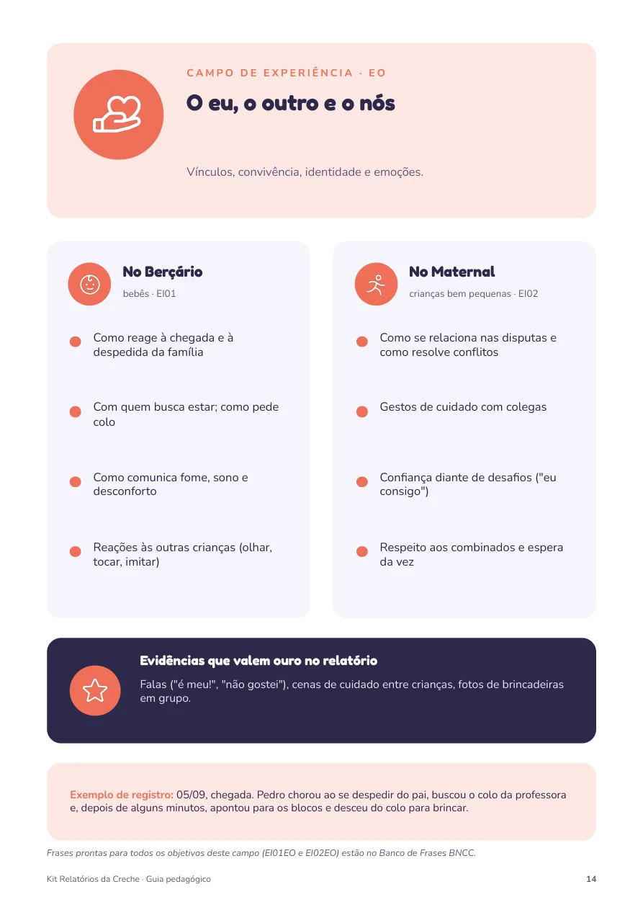

Guia pedagógico
Trinta páginas que explicam o porquê e o como: o que a LDB, as DCNEI e a BNCC pedem, o que dizem Hoffmann, Pikler, Wallon e Vygotsky, e o que observar em cada campo de experiência no Berçário e no Maternal.
- Marcos do desenvolvimento de 0 a 4 anos
- Estrutura do relatório em seis blocos
- Situações delicadas e checklist final
